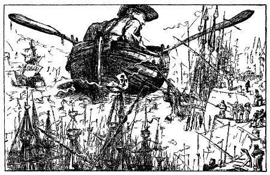
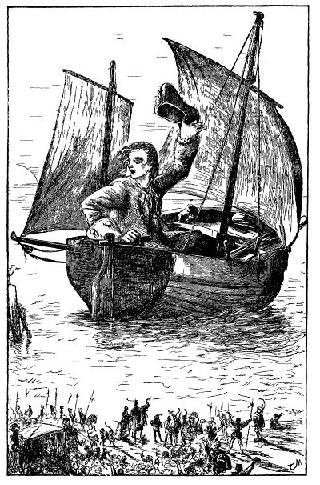
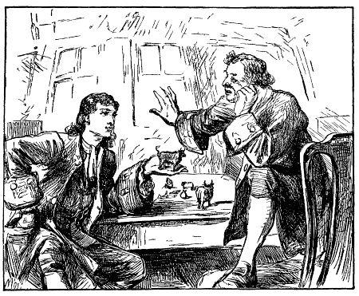

Chương 8
Gặp dịp may mắn, tác giả dời Blefuscu và, sau mấy phen nguy hiểm yên lành trở về Tổ quốc.
Đến Blefuscu được ba hôm, tôi tò mò đi dạo chơi trên bờ biển đông bắc hòn đảo. Bỗng tôi thấy cách bờ khoảng nửa dặm, có cái gì giống như một cái thuyền lật úp. Tôi cởi giày, tháo bít tất lội ra xa đến một trăm hay hai trăm fathom. Tôi thấy vật ấy bị thủy triều đẩy giạt đến phía tôi và nhận ra đó chính là một cái xuồng, có lẽ bị bão cuốn khỏi tàu, trôi vào đây. Tôi vội quay trở lại triều đình, xin vua cho tôi mượn hai mươi chiếc tàu lớn nhất còn lại sau cuộc bại trận, và ba nghìn thủy thủ, dưới quyền chỉ huy của quan phó thủy sư đô đốc. Đoàn tàu căng buồm ra khơi, còn tôi tìm lối gần nhất tiến ra chỗ cái xuồng. Thủy triều đã đưa chiếc sà-lúp vào gần bờ hơn nữa. Thủy thủ sẵn sàng những dây cáp mà tôi đã quấn với nhau cho thêm chắc. Khi đoàn tàu đến xuồng, tôi cởi quần áo, lội đến cách xuồng độ năm mươi fathom rồi tiếp tục bơi. Thủy thủ ném cho một đầu dây, tôi xỏ dây vào một cái lỗ ở mũi xuồng, buộc nút đầu dây kia buộc vào một chiến hạm. Nhưng vì chân tôi không chạm đất nên tôi kéo như thế nào thì xuồng cũng không di chuyển. Thế là tôi bắt buộc phải bơi sau nó, lấy tay đẩy. Nhờ sức thủy triều đang lên mà tôi đẩy được chiếc xuồng vào khá gần bờ, đến lúc nước chỉ đến cằm, chân chạm đất. Tôi nghỉ hai, ba phút, rồi lại đẩy chiếc xuồng cho đến khi nước chỉ còn ngập đến nách. Thế là phần việc khó khăn nhất đã xong, tôi lấy dây cáp chất ở một chiến hạm, buộc sà lúp vào chiếc tàu. Kết hợp với gió thổi thuận chiều và thủy thủ ra sức kéo, tôi đẩy cho đến khi sà lúp chỉ cách bờ hai mươi fathom. Đến khi thủy triều xuống và chiếc xuồng đã ở trên cạn, chúng tôi được hai nghìn người, sẵn sàng dây thừng và máy móc, cố hết sức lật ngửa chiếc xuồng lên và thấy nó không hư hại gì mấy.
Tôi sẽ không làm phiền bạn đọc bằng cách kể lể dài dòng những khó khăn trong mười ngày làm mái chèo, để kéo chiếc xuồng vào hải cảng Blefuscu. Dân chúng tụ tập rất đông ở cảng, hết sức khâm phục cái thuyền khổng lồ này. Tôi bảo nhà vua rằng số phận may mắn của tôi đã gặp được con thuyền này, nó sẽ chở tôi đến một nơi nào khác để từ đó có thể đưa tôi về quê hương. Tôi xin ngài ra lệnh cho mọi người cung cấp cho tôi nhưng vật liệu cần thiết để trang bị cho con thuyền. Sau cùng tôi xin ngài để cho tôi dời khỏi nơi này. Ngài tỏ ra tiếc nuối nhưng rồi chấp nhận mọi đề nghị.
Tôi rất ngạc nhiên không nghe thấy có thư từ gì của nước Lilliput hỏi tin về tôi. Sau này, người ta cho tôi biết nhà vua không ngờ rằng tôi đã biết dự định của ngài, ngài nghĩ rằng tôi sang Blefuscu để giữ lời hứa sau khi được phép của ngài, điều này ai ai cũng biết và tôi sẽ trở lại sau cuộc đi chơi ấy. Nhưng cuối cùng, đợi mãi không thấy, ngài lo lắng và sau cuộc hội kiến với viên quan quản lý kho bạc và bè phái ông ta, một viên quan đại thần được phái sang Blefuscu đem theo bản sao bản án của tôi. Viên quan này nhận được chỉ thị là phải trình bày để nhà vua Blefuscu thấy rõ đức độ bao dung của vua Lilliput chỉ trừng phạt tôi bằng cách chọc mù mắt mà thôi, vậy mà tôi đã trốn tránh công lý và nếu tôi không quay trở về sau hai tiếng đồng hồ, tôi sẽ bị tước chức Nardac và tuyên bố là kẻ phản bội. Vị đại diện ấy còn nói thêm, muốn giữ gìn việc giao hảo giữa hai nước, vua Lilliput mong muốn vua nước bạn xuống lệnh trói gô tôi lại, đưa tôi về Lilliput để chịu hình tội của một tên phản bội.
Vua Blefuscu thảo luận ba ngày, rồi đưa một bức thư phúc đáp, giọng rất lễ độ và khôn ngoan. Ngài nói rằng, trói chân trói tay tôi gửi trả vua bạn là một việc không thể làm nổi, mặc dù tôi chiếm mất hạm đội của ngài, song ngài vẫn mang ơn tôi đã bênh vực ngài lúc ký kết hòa ước, vả lại, cũng chẳng mấy nữa cả vua hai nước sẽ được yên lòng vì tôi đã thấy một cái thuyền khổng lồ có thể chở tôi ra biển, và ngài đã ra lệnh trang bị chiếc thuyền và dưới sự chỉ bảo của tôi. Do đó, ngài hy vọng rằng, chỉ trong ít tuần lễ nữa, cả hai nước sẽ thoát được một gánh nặng to xù xù ngần ấy.
Được bức thư phúc đáp, vị đại diện quay về Lilliput. Vua Blefuscu kể cho tôi tất cả mọi chuyện đã xảy ra, đồng thời có nhã ý (một cách bí mật) sẵn sàng che chở tôi, nếu tôi muốn ở lại phụng sự ngài. Tôi nghĩ đó là những lời nói chân thật của ngài, nhưng tôi đã quyết định không được tin một ông vua hay một vị tổng trưởng nào hết. Bởi vậy, tôi xin ngài thứ lỗi cho tôi và tôi thành thực cảm tạ nhã ý của ngài. Tôi nói với ngài rằng, số phận - dù tôi, dù xấu - đã cho tôi gặp được con thuyền nên tôi nhất quyết ra đi, thà lênh đênh trên mặt biển còn hơn là ở lại để trở thành kẻ gây những mối bất hòa giữa hai vị vua hùng mạnh. Câu trả lời này không làm phật ý đức vua, tôi nhận thấy ngài và các vị tổng trưởng hài lòng về quyết định của tôi.
Những sự việc ấy đã khiến tôi quyết định ra đi sớm hơn một chút so với dự kiến, triều đình nóng lòng muốn tôi dời đất nước này nên hăng hái giúp đỡ tôi trong công việc sửa soạn. Năm trăm người được giao nhiệm vụ làm hai cánh buồm, dưới sự chỉ huy của tôi, họ khâu chập mười ba lần vải dày nhất. Tôi chịu khó quấn mười, hai mươi, ba mươi dây cáp và dây thừng của họ lại làm một cho chắc. Sau nhiều buổi tìm kiếm, tôi thấy trên bờ biển một phiến đá để làm neo, tôi lấy mỡ của ba trăm con bò để bôi trơn cho thuyền và dùng vào mấy việc khác. Phải khó nhọc hết sức mới hạ được những cây to nhất để đẽo mái chèo và cột buồm, mặc dù tôi đã được các thợ mộc xây dựng dinh thự của nhà vua giúp sức bào, đục, sau khi tôi làm nhưng việc nặng hơn.
Một tháng sau, mọi việc đã xong xuôi. Tôi tâu với hoàng thượng rằng tôi đợi lệnh của ngài và muốn cáo từ ngài. Khi hoàng thượng và hoàng gia đến, tôi nằm xuống và ngài đưa tay cho tôi hôn một cách thân ái. Hoàng hậu và các hoàng tử cũng làm như vậy. Vua tặng tôi năm mươi túi tiền, mỗi túi đựng năm mươi đồng sprug có chân dung toàn thân ngài. Tôi cất những túi tiền ấy vào găng tay cho khỏi mất. Buổi lễ tiễn đưa phải dài dòng lắm mới kể hết.
Nói ngắn gọn, tôi mang theo một trăm con bò, ba trăm con cừu, với số bánh và nước uống tương ứng, đó là chưa kể số thịt chín mà bốn trăm người làm bếp cung cấp cho tôi, tôi còn mang theo về nước hai bò đực và sáu bò cái sống, cũng từng ấy cừu đực, cừu cái để cho chúng sinh sôi nảy nở ở nước tôi, tôi mang theo một bó cỏ và một túi lúa mì cho chúng ăn. Tôi rất muốn mang theo mười hai người nước này, nhưng nhà vua không cho phép. Sau khi khám xét túi tôi cẩn thận, ngài bắt tôi lấy danh dự thề là không mang theo một người nào, dù người ấy tình nguyện theo tôi.

Sửa soạn tất cả đâu vào đấy, ngày 24 tháng chín năm 1701, lúc sáu giờ sáng, tôi căng buồm ra khơi. Gió thổi hướng đông nam. Khi đi được bốn dặm về hướng bắc, lúc đó khoảng sáu giờ tối, tôi bỗng thấy một hòn đảo nhỏ cách tôi nửa dặm, về hướng đông bắc. Tôi tiến đến đảo và cắm neo ở nơi khuất gió, hình như đảo không có người ở. Tôi ăn qua loa mấy miếng rồi đi ngủ. Tôi làm một giấc ngon lành ít nhất là sáu tiếng, bởi vì lúc tôi dậy trời đã tảng sáng. Tôi ăn sáng trước khi mặt trời mọc, gió thổi thuận chiều, tôi nhổ neo, vẫn hướng hôm trước mà căng buồm, theo một chiếc la bàn bỏ túi. Tôi có ý định đến một trong những hòn đảo ở phía đông bắc đất Van Diemen (tức là đảo Tasmania, phía nam châu Úc). Ngày hôm ấy không thấy gì, nhưng hôm sau, khoảng ba giờ chiều, theo sự tính toán của tôi, cách Blefuscu hai mươi tư dặm, tôi thấy một cánh buồm đi về hướng đông nam. Tôi căng buồm chạy thẳng về hướng đông. Tôi gọi họ nhưng vô hiệu. Thuyền tôi lướt rất nhanh. Tôi căng tất cả buồm lên, và độ nửa giờ sau, chiếc tàu trông thấy tôi, nó kéo cờ và nổ một phát súng đại bác. Khó mà tả hết được nổi vui sướng lúc ấy, thật không ngờ một ngày kia tôi sẽ lại được trông thấy Tổ quốc thân yêu và tất cả những thứ mến thương nơi quê hương. Tàu buông buồm xuống, thuyền của tôi đuổi kịp, lúc ấy khoảng năm, sáu giờ. Đó là ngày 26 tháng chín. Thấy lá cờ nước Anh, lòng tôi vô cùng xúc động. Tôi bỏ đàn bò và đàn cừu vào túi áo ngoài, trèo lên boong tàu với hòm lương thực. Đây là một tàu buôn Anh từ nước Nhật trở về, qua các biển Bắc và

Tôi sẽ không kể với bạn đọc những chi tiết cuộc hành trình này, nói chung là tốt. Chúng tôi đến bờ biển

Tôi ở với vợ con chỉ được hai tháng, lòng ham muốn được thăm các nước khác không cho phép tôi ở nhà lâu hơn. Tôi để lại một nghìn rưởi sterling cho gia đình và chuyển về một căn nhà tươm tất tại Redriff. Tôi mang theo số tiền còn lại và ít hàng, mong làm giàu thêm. Tôi còn được hưởng ít đất của chú John để lại gần Epping, mỗi năm thu được lợi tức độ ba mươi sterling, tôi có thêm món tiền cho thuê cửa hàng cơm "Bò Đen" Ở Fetter-Lane, mỗi năm lợi tức gấp đôi. Vì vậy, tôi không phải lo nghĩ về việc gia đình có thể bị thiếu thốn trong thời gian tôi đi vắng. Con trai tôi là Johnny -lấy tên theo tên chú tôi - là một đứa bé thông minh, học trường trung học. Con gái tôi là Betty (nay đã có chồng con) học nghề may. Tôi từ biệt vợ và hai con, cả nhà chẳng ai cầm được nước mắt. Chuyến này, tôi đi tàu Phiêu Lưu một chiếc tàu buôn ba trăm ton[1], đi Surat, do thuyền trưởng John Nicholas Ở

[1] Đơn vị Anh, 1ton bằng 1016kg